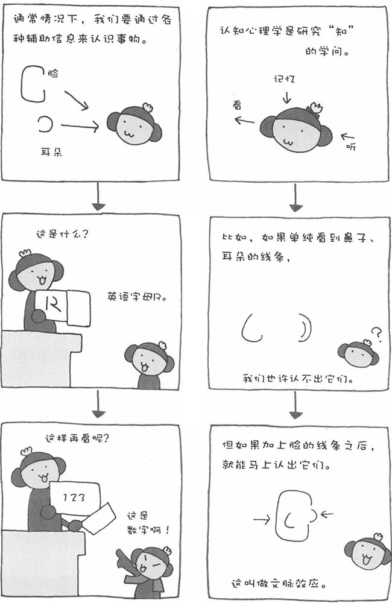

一提到"认知"，我们一般都会理解为"认识"、"知道"等意思，在心理学上对"认知"的理解稍微有些不同。认知心理学主要研究的是"知觉"、"记忆"、"思考"、"学习"等有关"知"的内容。换句话说，就是研究人类的"视"、"听"、"记忆"等原理的学问。在认知心理学中，有很多难懂的专业术语，也有很多不好理解的原理。在此，我尽量用浅显易懂的语言为大家介绍这门学问。不过，虽然认知心理学比较难，但它也是心理学中比较有趣的一个门类。
现在，制造厂商为了开发出更容易使用的家用电器、更方便操作的汽车、更便于观看的电视和电脑显示器、更具有亲和力的手机画面等，都要用到认知心理学。此外，要提高视觉、听觉有障碍的残障人士的生活质量，认知心理学也能派上大用场。现在，科学家正在利用认知心理学的原理开发"人工眼睛"。由此可见，认知心理学在未来有很大的应用前景。
以认知心理学中的记忆为例，我先来问您一个问题。我们人类在瞬间最多能记住几位数字？4位，还是10位？心理学家通过实验证实，人的短期记忆平均可以记住7位数字。当然，个人的记忆力存在差异，不过大体也在±2位的范围之内。在日本，电话号码除去区号一般都是6～7位，移动电话号码除去开头的"090"、"080"一般是8位。认知心理学认为，这是我们短期记忆的最大限度。如果把手机号码一连串写出来，比如"090……"后面的8位号码显得太长了，很难记忆。不过，如果将其分成两组，每组4位数字，如"090-…-…"就好记多了。由此可见，电话运营商在确定电话号码长度的时候，除了考虑电话网络所必需的位数之外，还从认知心理学的角度考虑到如何便于人们记忆。
